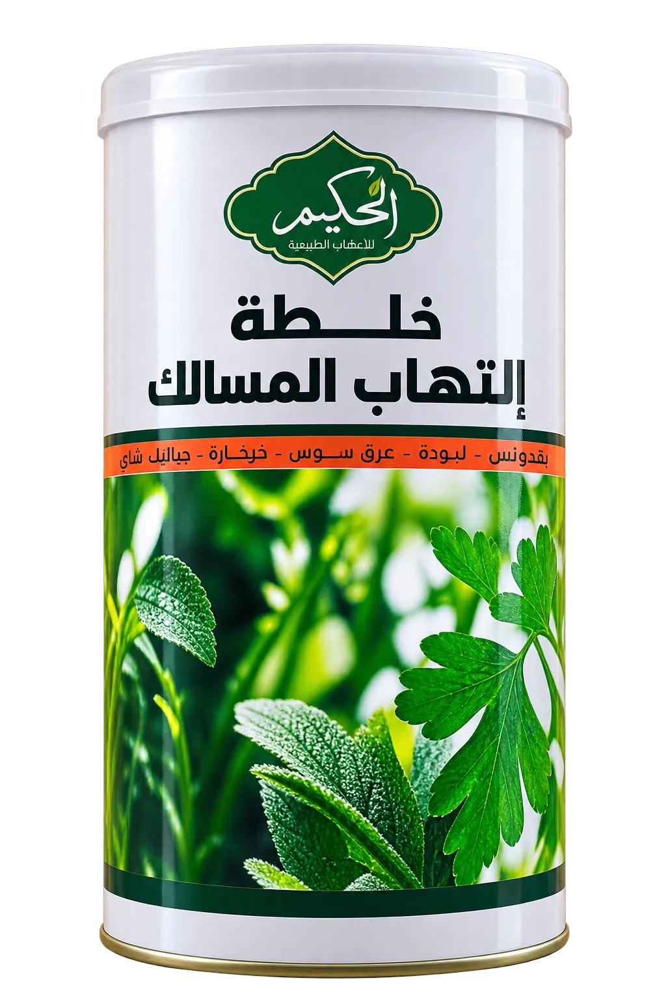
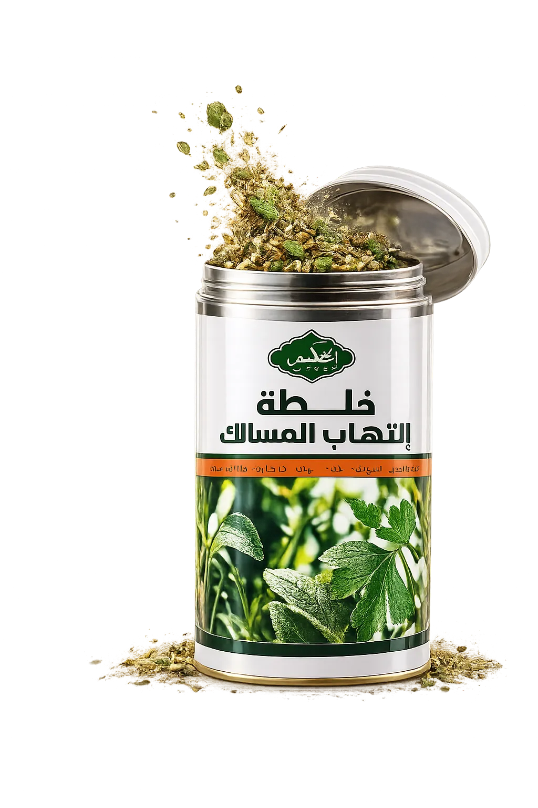
أعشاب طبيعية
منتجات منتقاةأوراق وزهور وبذور عشبية نقية من مصادر أصيلة، مجففة بطرق تحفظ خواصها وزيوتها الطبيعية.
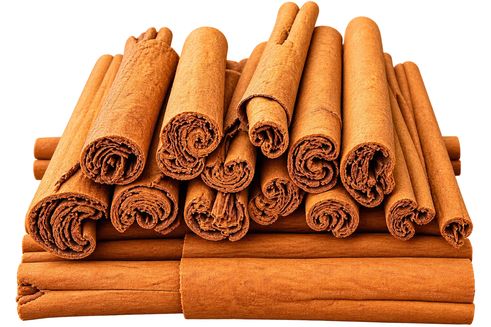
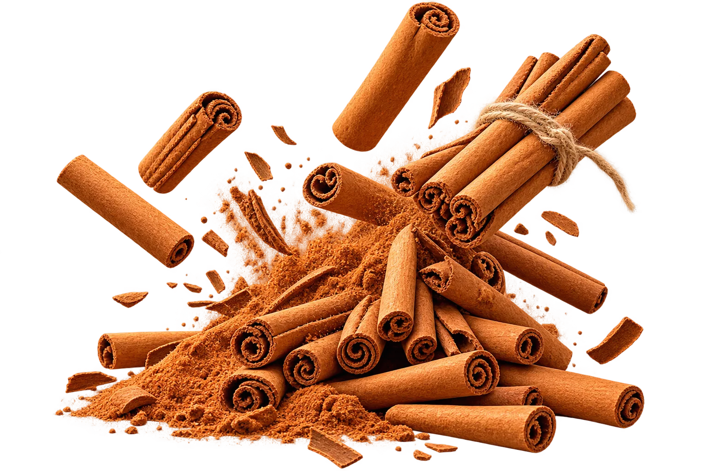
توابل وبهارات
نكهة أصليةقرفة، هيل، فلفل، وخلطات توابل طازجة تعطي لأطباقك عبق المطبخ الشرقي الأصيل.
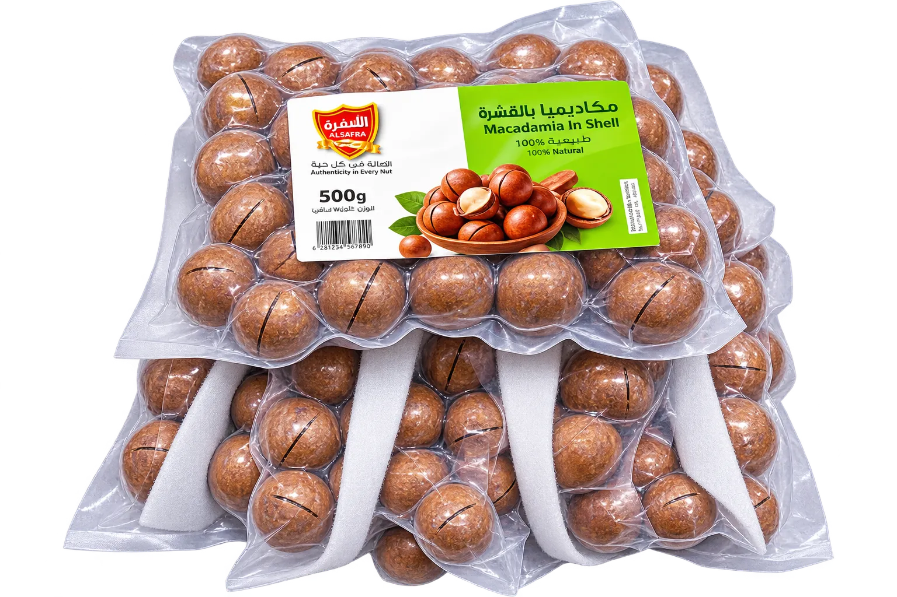
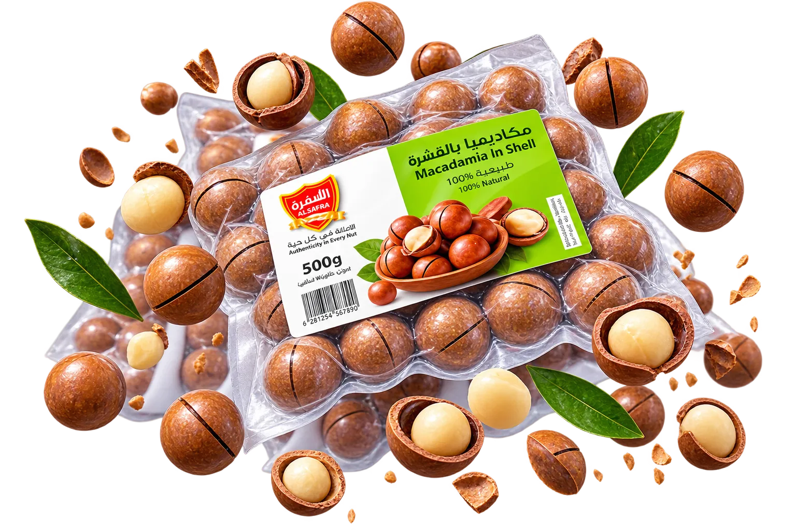
مكسرات فاخرة
فاخر ومقرمشمكاديميا، لوز، فستق، وجوز هند منتقاة باليد ومحفوظة بعناية للحفاظ على القرمشة والقيمة الغذائية.
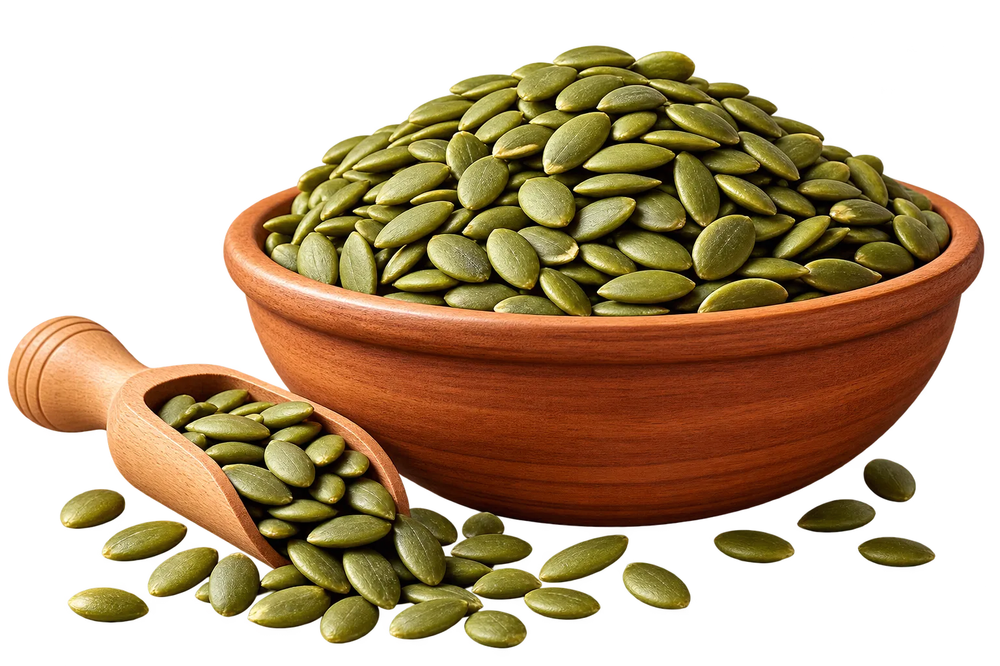
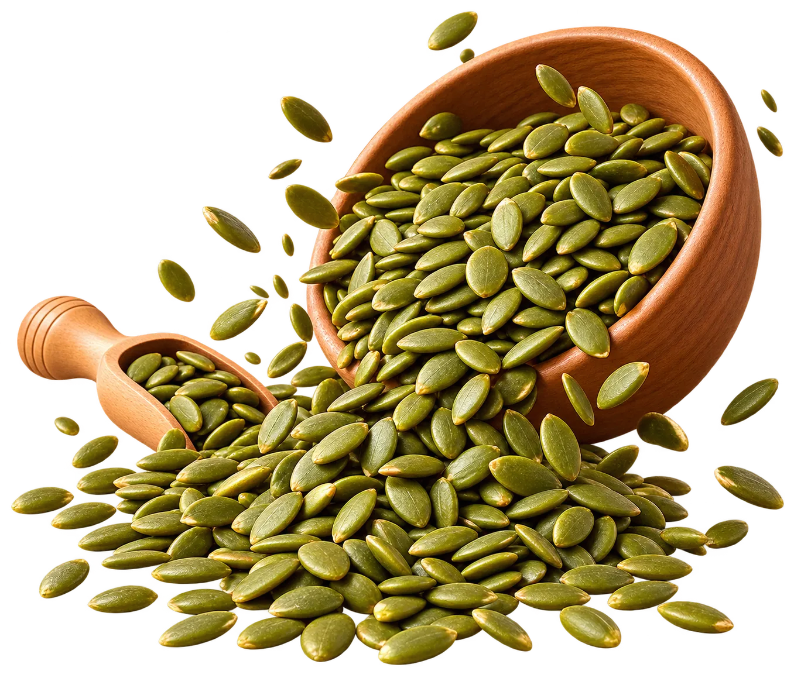
بذور وحبوب
طاقة طبيعيةبذور يقطين، شيا، كتان، وسمسم طبيعي من مزارع مختارة لتغذية صحية ومتوازنة.
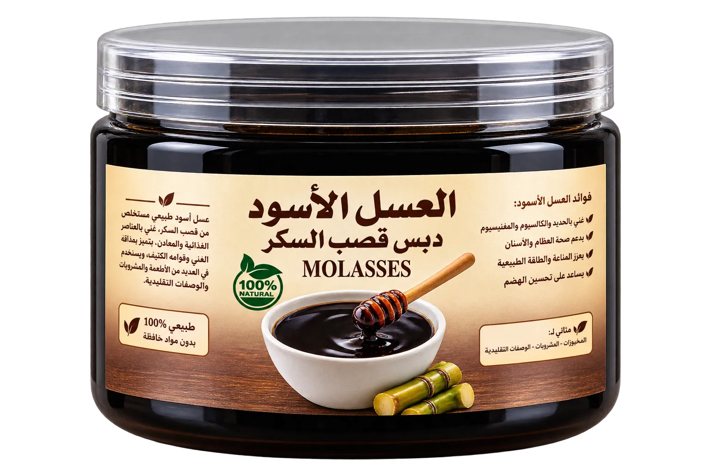
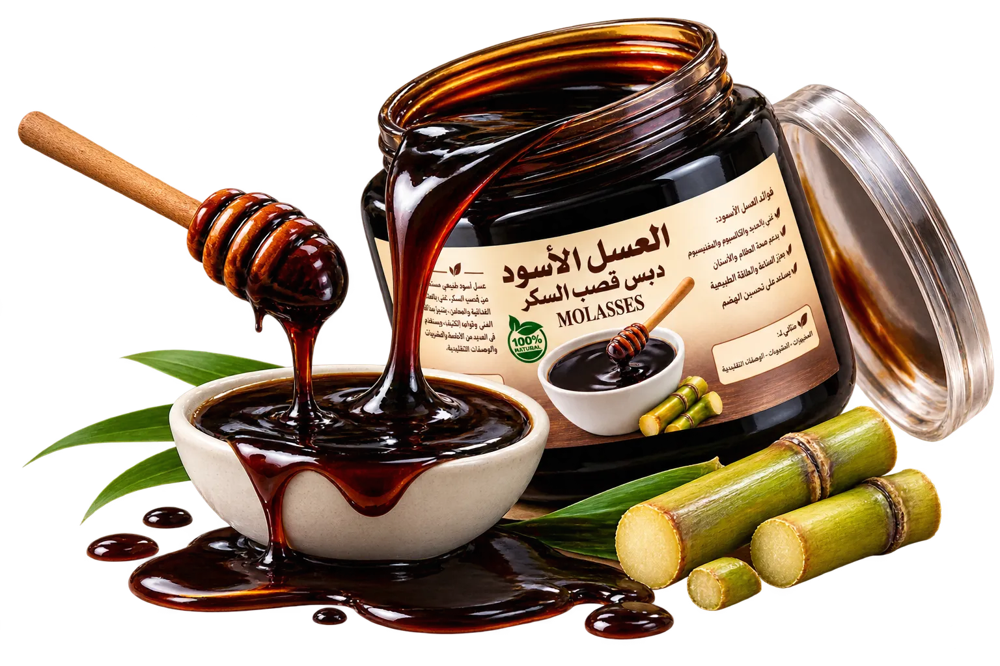
عسل ودبس طبيعي
نقي 100%عسل أسود صعيدي خام، دبس قصب السكر، وأعسال زهور طبيعية خالية من أي إضافات صناعية.
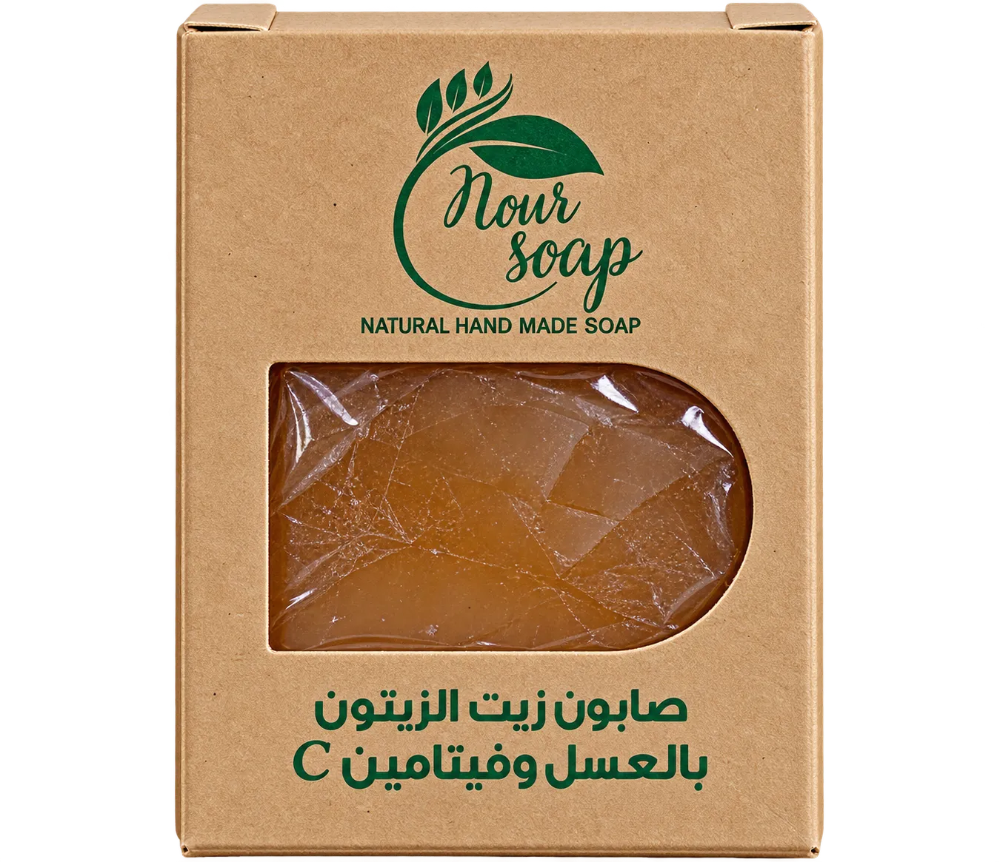
صابون وزيوت طبيعية
صناعة يدويةقطع صابون معتوقة بزيت الزيتون البكر، العسل، وفيتامين C، لتنظيف وترطيب لطيف وصحي للبشرة.
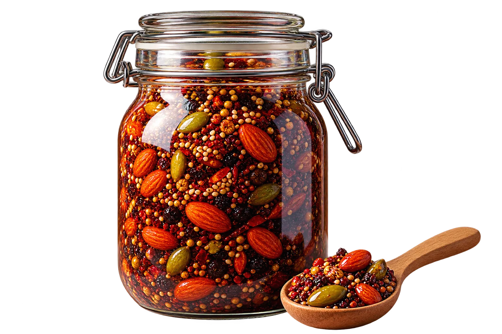
خلطات العطارة الخاصة
تركيبات متوارثةخلطات عشبية ومكسرات مجهزة بنسب دقيقة ومجربة لدعم المناعة والنشاط والراحة الجسدية.
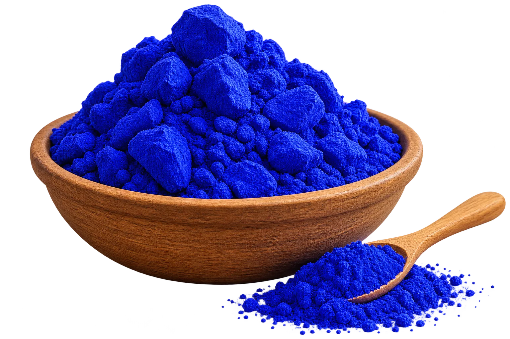
عناية ونضارة طبيعية
نقاء مغربيالنيلة الزرقاء الأصلية، طين مغربي، وخلاصات طبيعية لنقاء وتفتيح ونضارة البشرة والشعر.